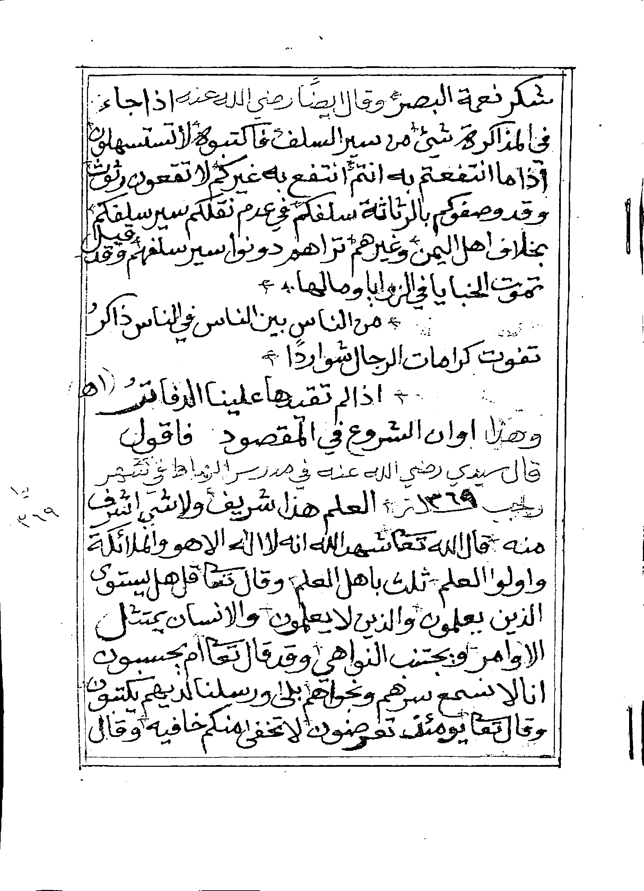

Naskah cetak
Rp 20per kata (Rp 5.000 per 250 kata)
- Transkripsi kitab atau naskah cetak
- Formatting Word standar gratis
- Berkas hasil: Word, PDF, dan teks polos
Mengetik manual memakan waktu berminggu-minggu, sedangkan OCR biasa sering berantakan saat membaca tulisan tangan. Cukup kirim foto atau pindaian naskah Anda: AI kami menyalinnya dengan setia, menata ayat, syair, dan catatan kaki, serta menandai bagian yang buram tanpa mengarangnya. Sudah termasuk formatting Word standar secara gratis.
Geser garis pemisah ke kiri atau kanan. Sisi kiri adalah pindaian naskah asli, sisi kanan adalah hasil salinannya.
شكر نعمة البصر. وقال أيضا رضي الله عنه: إذا جاء في المذاكرة شيء من سير السلف فاكتبوه، لا تستسهلون، إذا ما انتفعتم به أنتم انتفع به غيركم، لا تقعون رتوش(١)، وقد وصفوكم بالرثاثة سلفكم في عدم نقلكم سير سلفكم، بخلاف أهل اليمن وغيرهم تراهم دونوا سير سلفهم. وقد قيل:
اهـ.
وهذا أوان الشروع في المقصود فأقول:
قال سيدي رضي الله عنه في مدرس(٢) الرباط في شهر رجب سنة ١٣٦٩هـ
العلم هذا شريف ولا شيء أشرف منه، قال الله تعالى: ﴿شَهِدَ اللَّهُ أَنَّهُ لَا إِلَٰهَ إِلَّا هُوَ وَالْمَلَائِكَةُ وَأُولُو الْعِلْمِ﴾ [آل عمران: ١٨]، ثلث بأهل العلم، وقال تعالى: ﴿قُلْ هَلْ يَسْتَوِي الَّذِينَ يَعْلَمُونَ وَالَّذِينَ لَا يَعْلَمُونَ﴾ [الزمر: ٩]، والإنسان يمتثل الأوامر ويجتنب النواهي، وقد قال تعالى: ﴿أَمْ يَحْسَبُونَ أَنَّا لَا نَسْمَعُ سِرَّهُمْ وَنَجْوَاهُمْ بَلَىٰ وَرُسُلُنَا لَدَيْهِمْ يَكْتُبُونَ﴾ [الزخرف: ٨٠]، وقال تعالى: ﴿يَوْمَئِذٍ تُعْرَضُونَ لَا تَخْفَىٰ مِنْكُمْ خَافِيَةٌ﴾ [الحاقة: ١٨]، وقال
(١) رتوش: جمع رتش، تعبير حضرمي دارج بمعنى الإهمال أو عدم المبالاة.
(٢) مدرس الرباط: مجلس التدريس والمذاكرة العلمية في الرباط.

Kitab كشف الحجاب, halaman 3 naskah. Menampilkan penataan ayat berharakat, bait syair dua syatr sejajar, dan contoh catatan kaki (paket Lengkap).
Kami merancang alur kerja AI khusus untuk naskah Arab dengan kaidah yang ketat. Tujuannya satu: menghasilkan salinan yang setia pada naskah asli.
Dilengkapi harakat, nama surat, dan nomor ayat.
Ditata dua syatr sejajar sebagaimana lazimnya kitab cetak.
Penjelasan kosakata dan istilah ditempatkan rapi di bawah halaman.
Halaman terduplikasi, hilang, atau salah nomor dicatat dan dilaporkan.
Penambahan harakat ayat, catatan kaki, dan deskripsi adalah pelengkap penyusunan berbantuan AI. Isi asli naskah tidak diubah.
Metode ujinya terbuka untuk diperiksa siapa saja: 45 halaman dipilih acak dari kitab uji 400 halaman dalam tiga kelompok (cetak, tulisan tangan bersih, dan halaman sulit). Dua pemeriksa mandiri mengoreksi hasilnya huruf demi huruf, lalu angkanya kami umumkan di sini apa adanya.
Persentase huruf yang tepat tanpa menghitung harakat.
Persentase kata yang tersalin utuh dan benar.
Diukur terpisah antara harakat di dalam kata dan harakat akhir.
Memastikan teks utama dan catatan pinggir tidak tertukar.
Selama hasil uji formal belum terbit, Anda dapat menilai langsung lewat demo perbandingan di atas dan layanan uji coba 3 halaman gratis dari naskah Anda sendiri. Testimoni hanya kami tampilkan bila ada kutipan asli dengan izin.
Gratis tanpa kewajiban, termasuk konsultasi. Kirim foto JPG/PNG, PDF, atau tautan Google Drive.
Estimasi biaya dan durasi pengerjaan dihitung dari kepadatan kata pada contoh Anda.
Anda mengetahui jadwal selesai secara jelas sebelum pengerjaan dimulai.
Hasil dikirim dalam format Word (.docx), PDF, dan teks polos UTF-8.
Simulasi biaya satu kitab 400 halaman dibandingkan dengan jasa pengetikan Arab lain di Indonesia.
Data harga pasar pengetikan Arab di Indonesia dicek pada 29 Oktober 2026. Karena ukuran halaman tiap penyedia berbeda, angka di bawah adalah kisaran perbandingan, bukan hitungan mutlak.
| Layanan | Tarif per halaman | Kitab 400 halaman | Catatan |
|---|---|---|---|
| Pengetik lepas (Fastwork) | Rp 2.000, atau Rp 2.500 dengan harakat | Rp 800.000 sampai Rp 1.000.000 | Minimal 16–20 halaman. Umumnya untuk teks cetak; kemampuan membaca manuskrip tulisan tangan dan formatting tidak dicantumkan. |
| Jasa ketik profesional (5 hari) | Rp 10.000, harakat +Rp 3.000 | Rp 4.000.000 (dengan harakat Rp 5.200.000) | Tenggat 5 hari untuk dokumen umum; kitab 400 halaman biasanya memerlukan penawaran dan waktu khusus. |
| Jasa ketik profesional (1 hari) | Rp 25.000, harakat +Rp 3.000 | Rp 10.000.000 (dengan harakat Rp 11.200.000) | Tarif kilat. Kemampuan membaca manuskrip tulisan tangan tidak dicantumkan. |
| OpenTurath Manuskrip | Rp 20/kata cetak, Rp 30/kata tulisan tangan (setara Rp 5.000 dan Rp 7.500 per 250 kata) | Rp 2.000.000 cetak, Rp 3.000.000 tulisan tangan | Gratis formatting Word standar, gratis uji coba 3 halaman pertama, gratis konsultasi, dan plafon tagihan maksimal perkiraan + 10%. |
Sumber acuan tarif: Jagoketik dan Fastwork. Pengetik lepas memang bisa lebih murah di atas kertas; nilai tambah kami ada pada pembacaan tulisan tangan, ketepatan ayat dan syair, serta formatting yang sudah termasuk.
Perbandingan objektif berdasarkan informasi layanan yang umum tersedia di pasar.
| Fitur | Jasa ketik manual | OCR gratis | OpenTurath Manuskrip |
|---|---|---|---|
| Membaca manuskrip tulisan tangan | Tergantung pengetik | Umumnya tidak memadai | Ya |
| AI khusus naskah dan kaidah Arab | Tidak | Tidak | Ya |
| Bagian tak terbaca ditandai tanpa ditebak | Tergantung kesepakatan | Tidak | Ya |
| Ayat berharakat dengan nama surat dan nomor ayat | Harakat berbayar tambahan | Tidak | Ya |
| Bait syair ditata dua syatr sejajar | Biasanya biaya tambahan | Tidak | Ya |
| Catatan kaki penjelas kosakata dan istilah | Tidak termasuk | Tidak | Ya paket Lengkap |
| Deskripsi naskah (duplikasi, hilang, salah nomor) | Tidak termasuk | Tidak | Ya paket Lengkap |
| Formatting Word standar gratis | Bervariasi | Tidak | Ya |
| Berkas Word, PDF, dan teks polos UTF-8 | Umumnya Word/PDF | Teks polos saja | Ya |
| Jaminan plafon tagihan maksimal perkiraan + 10% | Tidak dicantumkan | Tidak berlaku | Ya |
| Uji coba 3 halaman pertama gratis | Jarang tersedia | Gratis terbatas | Ya |
| Konsultasi naskah gratis | Bervariasi | Tidak ada | Ya |
| Perjanjian kerahasiaan (NDA) bila diminta | Tergantung penyedia | Tidak ada | Ya |
| Kuitansi resmi untuk laporan hibah | Tergantung penyedia | Tidak ada | Ya |
Satu halaman standar berisi 250 kata, sehingga Rp 5.000 per halaman standar setara dengan Rp 20 per kata.
Rp 20per kata (Rp 5.000 per 250 kata)
Rp 30per kata (Rp 7.500 per 250 kata)
+ Rp 10per kata (+ Rp 2.500 per 250 kata)
Tata letak khusus siap cetak (ukuran buku tertentu atau InDesign) ditawarkan terpisah. Formatting standar adalah dokumen Word yang rapi dan siap disunting.
Rp 2.000.000
400 × 250 = 100.000 kata × Rp 20
Tagihan akhir tidak melebihi Rp 2.200.000 (perkiraan + 10%).
Kepadatan teks antarhalaman sangat berbeda. Satuan kata jauh lebih objektif karena dapat Anda cek sendiri menggunakan fitur hitung kata di Microsoft Word.
Hanya kata pada teks hasil. Harakat tidak menambah hitungan. Nomor halaman, header, footer berulang, halaman kosong, dan sampul tidak dihitung. Catatan pinggir dihitung.
Bagian yang buram atau rusak ditandai dan tidak ditagih. Kesalahan ketik dari pihak kami diperbaiki tanpa biaya tambahan.
Estimasi dihitung dari 3 halaman contoh. Tagihan akhir mengikuti jumlah kata aktual: jika lebih sedikit, tagihan ikut turun; jika lebih padat, tidak pernah melebihi perkiraan + 10%.
Tiga halaman pertama gratis (satu kali per pengguna), lengkap dengan konsultasi gratis.
Tersedia kuitansi resmi untuk laporan pertanggungjawaban hibah, penawaran khusus untuk proyek volume besar, serta perjanjian kerahasiaan (NDA) untuk naskah sensitif. Sampaikan kebutuhan Anda melalui formulir di bawah.
Salinan teks naskah yang setia dan tertata rapi dalam berkas digital yang siap disunting.
Tahqiq, muqabalah, penilaian ilmiah, dan keputusan penerbitan. Catatan kaki maupun deskripsi naskah bersifat bantuan penyusunan berbasis AI, bukan keputusan ilmiah atau tashih resmi.
Kami tidak mempublikasikan naskah Anda, tidak membagikannya kepada pihak lain, dan tidak menggunakannya untuk melatih model AI. Seluruh berkas dihapus 30 hari setelah hasil dikirim, atau lebih cepat atas permintaan Anda. Pastikan Anda memiliki hak untuk memproses naskah tersebut, terutama bila menyangkut milik pihak lain, wakaf, atau edisi berhak cipta.
Karya ulama yang wafat lebih dari 70 tahun lalu umumnya telah masuk ranah publik, tetapi tata letak dan catatan penyunting edisi modern tetap dilindungi. Ketentuan lengkap tersedia di halaman Hak cipta OpenTurath.
Coba 3 halaman pertama secara gratis, termasuk konsultasi. Isi formulir ini, lalu lampirkan foto (JPG/PNG), pindaian PDF, atau tautan Google Drive naskah Anda.
Memakai webmail atau lebih nyaman lewat media sosial? Klik Salin isi formulir lalu kirim manual ke support@openturath.id atau DM Instagram @openturath.id.